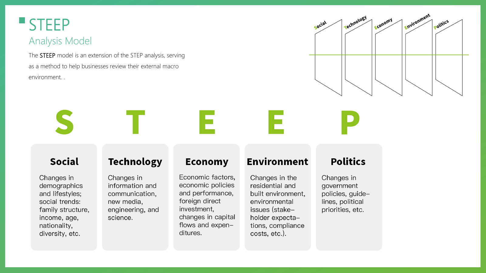

Knowledge
航天、艺术与设计跨界授课，建立共同知识底座。
Space Art & Design Lab
International Space Art & Design Collaborative Camp
从国际共创、知识赋能到原型制作、评审展览与持续孵化。项目把航天知识转化为可理解、可感知、可体验的未来生活提案。
Mission
共创营汇聚国际顶尖艺术设计院校师生与全球航天领域专家，通过跨学科协作，将航天任务、太空环境、未来社会与公众体验连接成一个可创作、可展示、可孵化的未来文明实验场。
航天、艺术与设计跨界授课，建立共同知识底座。
跨文化团队围绕六个方向推进概念、原型与展陈方案。
优秀作品进入联合展览，形成太空未来生活的全景叙事。
后续项目可继续孵化，并面向太空实验或公众传播验证。
Six Tracks
Space Vision & Future Narratives
Space Habitation & Digital Construction
Creative Payloads & Public Art
Off-Earth Daily Life & Experience Design
Space Computing & Embodied Intelligence
Space Fashion & Human-Machine Evolution
Program Rhythm
Expert lectures & courses. 建立航天、艺术、设计与技术的共同语言。
Creative exploration & incubation. 团队深化概念、完成试验并形成可展示原型。
Expert review & exhibition. 通过路演、评审、遴选与联合展览推进持续孵化。
Corpus Library
火星长期定居所需的关键技术信号，从空气、水、电力到生态自治。
宇航员心理、生理及感官异化体验，用于设计情绪支持与感知干预。
航天技术向地球日常产品转化的案例库，连接极端环境与民用创新。
真实太空物件中的象征、纪念与仪式意义，支撑叙事与公共艺术。
Case Library
当身体的熟悉性失效，如何通过结构化的符号行为重建人与世界的连接。
如何将地球文明的仪式结构与情感代码延伸到太空文明中。
当昼夜节律与季节变化失效，如何通过设计重建情感、记忆与仪式。
当空间失去地理意义，如何建立公共感与共识。
AI Co-creation Workshop
浏览并选择未来信号。
选择或输入地方挑战，AI 可辅助扩展。
生成 Provotyping Card 与 Interpretation 句式。
生成未来新闻标题和情境图像。
从 2050 目标倒推 2040 与 2030 行动。



Codex Skill System
这套 skill 把课程工作流拆成一个总控大 skill 和多个可独立调用的小 skill。学生可以从未来信号开始一步步完成方法产物，也可以在方案完成后继续生成项目文档、PPT、效果图、交互原型、故事板、视频和本地项目档案。
总控大 skill，负责串联完整 Future Design Thinking 流程：从主题界定、未来信号、STEEP、本地挑战、未来解释、Provotyping、明日头条、Backcasting，到最终方案和后期制作。
项目级总控小 skill，负责把前期方法、后期呈现、资产归档和最终交付检查连成一个连续项目工作流。
完成未来信号、STEEP、本地挑战、信号挑战配对、未来解释和概念卡。
把概念转化成可感知的未来新闻和可执行的倒推路线。
根据项目类型推荐合适呈现组合，并调用文档、PPT、图片、原型、视频等制作 skill。
把设计方法产物、生成资产、提示词、源文件和最终交付物保存到学生本地项目文件夹。
Local Archive
skill 会把项目整理为 00_project-brief、01_method-process、03_visual-assets、04_prototypes、05_documents、06_presentations、07_video-audio、08_delivery 和 09_ai-process-log，确保过程、资产和最终提交都能被追踪。
future-design-projects/<team-project>/
Download
推荐整套下载，保留总控 skill 与小 skill 的调用关系；也可以打开单个 skill 查看它的 SKILL.md。
Use $skill-installer to install from repo future-design-lab/future-design-lab.github.io these paths: skills/future-design-thinking-workshop, skills/future-design-project-controller, skills/future-signal-scout, skills/steep-analysis, skills/local-challenge-framing, skills/signal-challenge-pairing, skills/future-interpretation-builder, skills/provotyping-card-builder, skills/tomorrow-headline-builder, skills/backcasting-roadmap-builder, skills/project-presentation-router, skills/project-asset-archive, skills/project-delivery-checker. Restart Codex after installation.
Outputs
由未来信号和地方挑战组合形成，用于界定机会与冲突。
用一句可讨论、可修改的未来解释串联 A、B、C 要素。
以 2030/2040/2050 的新闻标题呈现可感知未来。
以市长、商业领导者、个体行动者等角色倒推行动路径。
Tools
如果在使用过程中遇到技术问题、Token 充值、API 配置等，可以通过微信扫码联系 manta.ai 获取帮助。